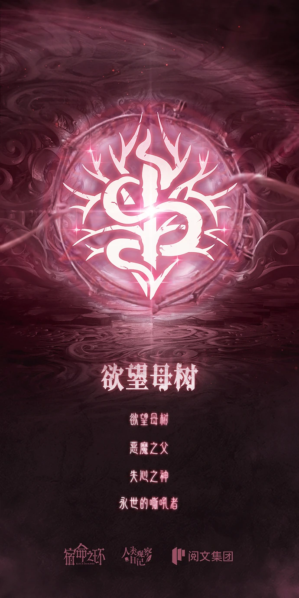

Overview
Soon after, the Mother Tree of Desire was born, giving rise to life and introducing evil and desire.
The Second Day of Genesis, Book 2, chapter 1171
The Mother Tree of Desire is one of the Outer Deities from the Cosmos that attempted to invade Earth. "She" is the second child of the Original Creator, and is one of "His" three direct children along with the Mother Goddess of Depravity and the Son of Chaos.1Book 2, chapter 11712Book 1, chapter 1271
"She" was the original owner of the Abyss and Chained Pathways. "She" is also the current owner of the Patriarch.
Honorific Name
Complete
Mother Tree of Desire; Father of Devils; Lord of Deviants; Source of Curses; Perpetual Blatherer; Heartless God (欲望母树， 恶魔之父， 异类之主， 诅咒之源， 永世的嘶吼者， 失心之神)
Without the Tenebrous World
Mother Tree of Desire; Perpetual Blatherer; Heartless God (欲望母树， 永世的嘶吼者， 失心之神)
TRANSLATION NOTE Even though "失心"'s literal translation is "lost heart", the term's actual meaning is "lost mind" (for example, "失心疯" means "madness" or "insanity"). Thus, a more correct translation of "失心之神" is "God of Lost Minds" instead of "Heartless God" from the official Webnovel English translation.
Symbols, Authorities & Abilities
"She" possesses full Authority over the Patriarch and partial Authority over the Abyss and Chained Pathways (through accommodating the Tenebrous World but without the Uniquenesses) and the corresponding Symbols, which include but are not limited to the following:
- Abyss: Partial authorities over Degeneration, Filth, Corruption, Desire, Curses, and Deviants, and the symbol of Abyss of the Heart/Mind. Partial via the Tenebrous World.
- Chained: Authorities over Curses, Deviants, Binding, and Objects, and the symbol of Binding. Partial via the Tenebrous World.
- Patriarch: Authorities over Love, Envy, Reason, and Sentient Beings, and Symbol of Desires.
The Symbols, Authorities, and Abilities "She" possesses and displays at the Above the Sequence level include:
- Chaos: As one of the three Children of The Original Creator, "She" symbolizes Chaos. Even though "She" doesn't have a corresponding Sequence 0 to denote this Chaos, "She" is the Father of Devils and the Mother Tree of Desire, which makes "Her" symbolically, inherently Chaotic.12
- Father of Devils (Former): "She" was the original Father of Devils before "She" lost the Tenebrous World and the two corresponding Pathways when the Original Creator awakened.
- Because of "Her" connection, "She" held corruptive influence over "Her" former two pathways after the Astral Barrier had sufficiently weakened.
- After The Apocalypse, "She" is re-accommodating the Tenebrous World but without the the Uniqueness of Chained, the Uniqueness of Abyss, and their corresponding Beyonder Characteristics.13
- Mother Tree of Desires: "She" is the Mother Tree of Desires and carries the corresponding symbols.
- Perpetual Blatherer: "She" is the initiator of Reason and endless Desires.1 4Author's WeChat post mtod
- "She" can awaken the survival instincts of all sentient beings in a region, including other Great Old Ones, which can cause "Them" to flee.5Book 2, chapter 1169
- "She" can manipulate the Desires within the heart of all creatures.6
- "She" can rely on the symbolism of Desire to locate the true body of the Lord of Mysteries.6Book 2, chapter 1168
- With "Her" birth came the rise of Life and the introduction of Evil and Desire.14
- In comparison, the Abyss's authority over Desire lies more in inducing, catalyzing, and igniting Desires, rather than embodying Desire itself like the remnants within the Mother Tree of Desire.15
- Reason: "Her" birth symbolizes of the emergence of free will and the distinction between self and others.16
- Before "Her" birth, the Mother Goddess of Depravity was essentially still part of the Original Creator as a single entity. After "She" appeared, the Mother Goddess of Depravity and the lives that appeared with the Mother Goddess's birth were no longer considered part of the Original Creator as a single entity.
- Tree Supplication: "She" is able to Supplicate powers from the Mother Goddess of Depravity.
- However, it will depend on the mood of the Mother Goddess of Depravity whether "Her" prayer will be accepted or not.17
- Ravings: "Her" authority emphasizes the effects of Ravings, and is not Ravings itself.18
- Fear: "She" is the embodiment of the emotion of Fear.19
- This authority overlaps with the authority of the Darkness.
Countering Symbols, Authorities & Abilities
Certain Symbols, Authorities, and Abilities of other Great Old Ones can counter some of "Her" powers, which include but are not limited to the following:
- Lord of Mysteries:
- High-Dimensional Overseer:
- Dimensionality partially counters Desires.
- Beings in higher dimensions or within the High-Dimensional Overseer's dimensional painting will not be fully consumed by the explosion of desires from the Father of Devils, "They" would only enter a brief state of stagnation.5
Appearance
True Form: "She" resembled a humanoid giant tree covered in chaotic scales. Its surface was adorned with enticing crystalline fruits, glistening, alluring flowers, various metallic emblems, black hearts, bare tumors, and coins from different civilizations. At the tree's upper reaches were two heads. The lower head was male, eyes closed, exuding bizarre desires. The upper head was female, with green hair and a face of extraordinary beauty, possessing a charm that spoke directly to affection.7Book 2, chapter 1165
History
Genesis
On the first day, the Original Creator awoke and created this world, but Reality, the Spirit World, the Astral World, and Fate were still mixed together.
On the second day, the Oldest One birthed the Mother Goddess of Depravity. Reality gained a foundation, the Spirit World and Astral World were separated, and the River of Fate began to flow. Soon after, the Mother Tree of Desire was born, giving rise to life and introducing evil and desire. Then came the Son of Chaos, who established order-and with it, shadows naturally emerged.1
First Epoch
As one of the direct children of the Original Creator, the Mother Tree of Desire was most affected by the Law of Convergence when the Original Creator awoke, causing part of "Her" Sefirah (later self-completed into the Tenebrous World) and the two Pathways of Chained and Abyss to be separated from "Her" and were attracted to Earth.
During the Lost Era, the Primordial God Almighty and Celestial Worthy's strong and still-perfect-and-whole power deterred the Outer Deities, who can only settle for observing Earth from afar for now.20
Fourth Epoch
In the Fourth Epoch, the Tree of Shadow was planted into the ruins of Trier by the Mother Tree of Desire. This series of event is connected to the Tenebrous World's leakage after Alista Tudor's attempt to merge with the Mirrored Original Creator, causing the powers of Sefirot in the Western Continent to leak to the outside world during the War of the Four Emperors.21 Nobody realized the secret planting of the Tree of Shadow due to the urgency of constructing the city and countering certain underground threats.22
Fifth Epoch
"She" has a direct influence over the Pathways "She" originally owned. With the weakening of the Astral Barrier at the end of the Fourth Epoch, "She" was able to send more power through the barrier onto Earth, increasing "Her" control over Beyonders of the two Pathways, including the Chained God and the Devil Monarch Farbauti.
During the beginning of the Fifth Epoch, "She" suddenly appeared and corrupted the Chained God, turning the Rose School of Thought into an evil organization that believes in releasing desires and indiscriminately commit rapes, murders, and sacrifices.23
"She" has a conflict with the Primordial Moon within the Rose School of Thought,24 and is believed to possess some High-Sequence Beyonder Characteristics of the Moon.25 "She" also corrupted the Devil Monarch Farbauti but didn't manage to completely control "Him" like "She" did with the Chained God. Perhaps due to "Her" corruption, the current Abyss fell into a state where most devils were unable to live in.26
Lord of Mysteries
The Mother Tree of Desire was first introduced in Volume 3 when Klein was acting as Admiral Amyrius. Under "Her" guidance, Cynthia, Amyrius' mistress was corrupted by the forces in the Proliferation Necklace and mutated into a tree monster.27
Klein was later reminded by Orange Light Hilarion to beware of the Mother Tree of Desire.28
Circle of Inevitability
That evil god goes by the pseudonym Mother Tree of Desire in this world. Don’t attempt to understand Her, let alone guess Her true and complete title.
Madam Magician to Lumian Lee, Book 2, chapter 142
"She" possesses the authority of the Patriarch.
It was revealed that beneath the depths of Trier, the Tree of Shadow had its roots buried long before the construction of present-day Trier. The ambiance in Trier gradually transformed according to the Mother Tree of Desire's desired path.29
"Her" influence has grown significantly over the past year or two. According to Madam Magician, Mr. Poet noticed some rudimentary cooperation among these organizations which worship the Mother Tree of Desire. Some members of the Devil families also show signs of worshiping "Her".30
According to Madam Magician, among the Great Existences, the only one who didn't preach using an alias was the Mother Tree of Desire, because "Mother Tree of Desire" was a small segment of the corresponding existence's long string of honorific names. There were two reasons why understanding and reciting it didn't directly bring corruption: First, it was only a small segment, incomplete; second, the Mother Tree of Desire indirectly controlled the one worshiped by the Rose School of Thought in the real world and the Devil Monarch in the Abyss, so when this honorific name was mentioned, under conditions of limited understanding and while the barrier still existed, the proximity-based mystical phenomenon occurred, making it not so dangerous.31
Project Vortex
The Mother Tree of Desire participated in the Vortex by giving the Shadow of the Beauty Goddess "She" possessed to the Mother Goddess of Depravity. In turn, "She" received the corruption inside Roselle Gustav, which was then transplanted into the Chained God. Though Amon managed to reduce the corruption, it was still enough for Tirié to be born, stripping the Chained God of "His" last Abomination Characteristic.
The Fool's Dream
"She" exerted influence inside Klein's dream by running Mushu Hospital, alongside the Mother Goddess of Depravity. Together, "They" held the various traumas of Klein stored in the hospital basement. "She" heightened the sexual urges of a morgue assistant, making him engage in intercourse with the corpse of Panatiya shortly before it came to life.
Lumian theorized "She" was corrupting the security members of the Intis Group due to them being mummified, which matches "Her" aesthetics in the Rose School of Thought.
"She" withdrew from the Dream following the scrutiny from the main awareness alongside the Great Mother before the final confrontation between the Celestial Worthy and Klein.
The Day of Many Disasters
During the event, "She" took advantage of the chaos to attempt to fully grow the Tree of Shadow and descend onto Earth. Suah and Tirié merged with the Tree of Shadow,32 which was later destroyed by The Fool, leaving only its root. However, before he could eliminate Suah and Tirié, he had to enter the Astral Barrier to prevent it from being broken after the death of the Eternal Blazing Sun.33
It was revealed later on that this was part of a contract between the Mother Tree of Desire and the Mother Goddess of Depravity, witnessed by the Primordial God Almighty. After accommodating the Brood Hive, the Mother Goddess of Depravity would assist the Mother Tree of Desire, in exchange for the loss of the Tree of Shadow.34 5
The Apocalypse
In the early stage of The Apocalypse, Suah and Tirié conducted a ritual to sacrifice the Chained God to forcibly open a passage in the Astral Barrier with the Mother Goddess of Depravity's aid to allow the Mother Tree of Desire to descend within the barrier. "They" merged into the Chained God, intending to return to the Mother Tree of Desire, but were Fooled and Deceived by Klein, who had become a Lord of Mysteries, to mijudge the timing. Klein then Grafted the mass of Chained materials onto an area above the gray fog.35
During the battle between Earth's Above the Sequence and the Outer Deities, the Mother Tree of Desire was held off by the Lord of Mysteries Klein, along with the Supernova Dominator and the Goddess of Fate. In another battlefield, the Master of the Shadow Cottage and Farbauti, who had merged with each other and the Tenebrous World to become a Quasi-Father of Devils, lured the Inextinguishable Ravings into "Them" and then cursed "Themselves". Amon, with permission from Klein, used the Chained Uniqueness to establish a mystical connection between the Tenebrous World and the Mother Tree of Desire, severely wounding "Her" through the self-curses of the Tenebrous World. However, the Mother Tree of Desire in turn used the mystical connection to drag "Herself" toward the Tenebrous World's battlefield. With the help of the Mother Goddess of Depravity, "She" managed to shake off Klein's influence and took away the Tenebrous World. "She" then immediately fled into the Astral World, leaving the the Uniqueness of Chained and the Uniqueness of Abyss and corresponding Beyonder Characteristics behind.6 5
After The Apocalypse, the Mother Tree of Desire would need a long time to fully re-accommodate the Tenebrous World. Due to the fusion and influence of various Dao integrators, the Tenebrous World had developed a new consciousness and spirit. Although both "It" and the integrators fused within "It" had been destroyed by "Their" self-curses, "Its" spirit remained indestructible, chaotic, and extreme. Moreover, the Mother Tree of Desire was still in a severely wounded state, requiring at least decades, if not longer, to fully accommodate the Tenebrous World and completely recover. Furthermore, "She" had also gone into hiding to recover and accommodate in secrecy, preventing interference or being hunted by other Outer Deities, further ruling out any possibility of receiving healing from the Mother Goddess of Depravity. Thus, "She" was unlikely to be a factor in the near term.36
Trivia
- If "She" were to reclaim the Tenebrous World and its associated authorities, "She" would become the most powerful Great Old One outside of the Pillars. Furthermore, "She" would still be able to accommodate a non-Pillar Sefirah, gaining power comparable to a Pillar but lacking a corresponding Pillar symbolism.4
- If a Great Old One symbolizing Impotence existed, the Mother Tree of Desire would be able to make "Them" stand up again.37
Translations
| Language | Name |
|---|---|
| Chinese | 欲望母树 |
| Thai | พฤกษามาตาแห่งปรารถนา |
References
- Book 2, chapter 1171.
- Book 1, chapter 1271.
- Book 1, chapter 1347.
- Author's WeChat post mtod.
- Book 2, chapter 1169.
- Book 2, chapter 1168.
- Book 2, chapter 1165.
- Author's WeChat post sd, part 2.
- Author's WeChat post sd, part 22.
- Author's WeChat post red_priest, part 33.
- Author's WeChat post coi, part 36.
- Author's WeChat post um, part 9.
- Book 2, chapter 1177.
- Book 2, chapter 1171.
- Author's WeChat post abyss_abilities.
- Author's WeChat post secrets_suppliant_abilities, part 23.
- Author's WeChat post fate_abilities, part 4.
- Author's WeChat post fate_formulas, part 52.
- Author's WeChat post sleepless_abilities.
- Author's WeChat post history.
- Author's WeChat post coi, part 10.
- Book 2, chapter 263.
- Book 1, chapter 1041.
- Book 1, chapter 1233.
- Book 1, chapter 1303.
- Book 1, chapter 1128.
- Book 1, chapter 629.
- Book 1, chapter 723.
- Book 2, chapter 252.
- Book 2, chapter 300.
- Book 2, chapter 1052.
- Book 2, chapter 1101.
- Book 2, chapter 1115.
- Book 2, chapter 1154.
- Book 2, chapter 1156.
- Book 2, chapter 1177.
- Author's WeChat post corpse_collector_formulas, part 1.
Source
Article adapted from the Mother Tree of Desire article on the Lord of the Mysteries Fandom wiki (CC BY-SA). Chapter numbers follow that article's citation format.
Image gallery
